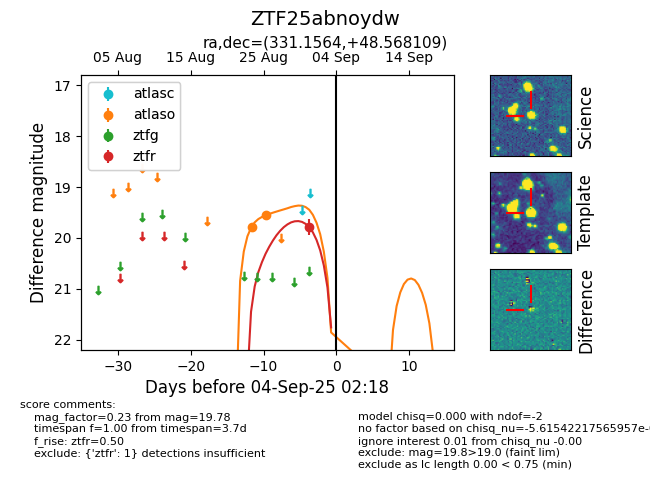

FINK: ZTF25abnoydw
Lasair: ZTF25abnoydw
ALeRCE: ZTF25abnoydw
ZTF25abnoydw (ztf,fink)
equatorial (ra, dec) = (331.1564,+48.56811)
galactic (l, b) = (96.6779,-5.61403)

last atlaso=19.55, ztfr=19.78
2 atlaso, 1 ztfr detections